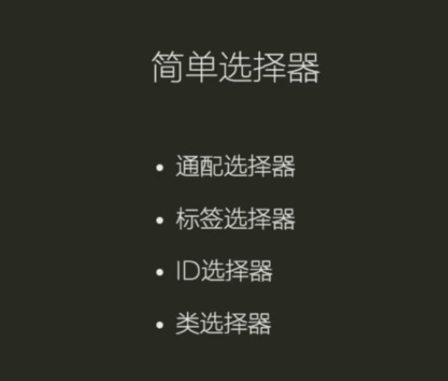

简单选择器

1.类型选择器（又名元素选择器）
这个选择器的选择器名与元素名不区分大小写也可以匹配。这是最简单的方式：选中一个给定类型的所有元素。
HTML：
<p>What color do you like?</p>
<div>I like blue.</div>
<p>I prefer red!</p>
CSS：
/* 所有p元素都是红色 */
p {
color: red;
}
/*所有div元素都是蓝色 */
div {
color: blue;
}
效果图：

2.类选择器
类选择器由一个点“.”以及类后面的类名组成。
类名是在class属性中没有空格的任何属性值。
注意：文档中的多个元素可以具有相同的类名，而单个元素可以有多个类名(以空格分开多个类名的形式书写)。
HTML：
<ul>
<li class="first done">Create an HTML document</li>
<li class="second done">Create a CSS style sheet</li>
<li class="third">Link them all together</li>
</ul>
CSS：
/* 所有类名叫 "first" 的元素都是粗体样式*/
.first {
font-weight: bold;
}
/* 所有类名叫 "done" 的元素都有删除线*/
.done {
text-decoration: line-through;
}
效果图：

HTML：
<p class="base-box warning important">My first paragraph.</p>
<p class="base-box editor-note">My second paragraph.</p>
<p class="base-box editor-note warning">My third paragraph</p>
CSS：
.base-box {
background-image: linear-gradient(to bottom, rgba(0,0,0,0.1), rgba(0,0,0,0.3));
padding: 3px 3px 3px 7px;
}
.important {
font-weight: bold;
}
.editor-note {
background-color: #9999ff;
border-left: 6px solid #333399;
}
.warning {
background-color: #ff9999;
border-left: 6px solid #993333;
}
效果图：

3.ID选择器
ID选择器由哈希/磅符号 (#) + 给定元素的ID名称 组成。
任何元素都可以使用id属性设置唯一的ID名称，由你自己选择一个ID名是什么。 这是选择单个元素的最有效的方式。
重要提示：一个ID名称必须在文档中是唯一的。重复ID的行为是不可预测的，比如在一些浏览器只计算第一个ID实例，其余相同的将被忽略。
HTML：
<p id="polite"> — "Good morning."</p>
<p id="rude"> — "Go away!"</p>
CSS：
#polite {
font-family: cursive;
}
#rude {
font-family: monospace;
text-transform: uppercase;
}
效果图：

HTML：
<p id="first"><strong>Winner</strong>: Velma Victory</p>
<p id="second"><strong>2nd</strong>: Colin Contender</p>
<p id="third"><strong>3rd</strong>: Phoebe Player</p>
CSS：
p {
text-transform: uppercase;
padding: 5px;
}
#first{
background-color: goldenrod;
}
#second{
background-color: silver;
}
#third{
background-color: #CD7F32;
}
效果图：

4.通用选择器
通用选择器（*）是最终的王牌。它允许选择在一个页面中的所有元素。
重要提示：使用通用选择器时小心。因为它适用于所有的元素，在大型网页利用它可能对性能有明显的影响：网页可能显示比预期要慢。大多数情况下，你都不会使用这个选择器。
HTML：
<div>
<p>I think the containing box just needed
a <strong>border</strong> or <em>something</em>,
but this is getting <strong>out of hand</strong>!</p>
</div>
CSS：
* {
padding: 5px;
border: 1px solid black;
background: rgba(255,0,0,0.25)
}
效果图：